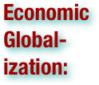
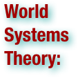

Globalization Terms
Please scan the terms to find what you are looking for - they are not in order!
.pdf (. . . )


Globalization refers to the increasing unification of the world's economic order through reduction of such barriers to international trade as tariffs, export fees, and import quotas. The goal is to increase material wealth, goods, and services through an international division of labor by efficiencies catalyzed by international relations, specialization and competition. It describes the process by which regional economies, societies, and cultures have become integrated through communication, transportation, and trade. The term is most closely associated with the term economic globalization: the integration of national economies into the international economy through trade, foreign direct investment,capital flows, migration, the spread of technology, and military presence. However, globalization is usually recognized as being driven by a combination of economic, technological, sociocultural, political, and biological factors. The term can also refer to the transnational circulation of ideas, languages, or popular culture through acculturation. An aspect of the world which has gone through the process can be said to be globalized. Against this view, an alternative approach stresses how globalization has actually decreased inter-cultural contacts while increasing the possibility of international and intra-national conflict.


Economic globalization refers to increasing economic interdependence of national economies across the world through a rapid increase in cross-border movement of goods, service, technology and capital. Whereas globalization is centered around the diminution of international trade regulations as well as tariffs, taxes, and other impediments that suppresses global trade, economic globalization is the process of increasing economic integration between countries, leading to the emergence of a global marketplace or a single world market. Depending on the paradigm, economic globalization can be viewed as either a positive or a negative phenomenon. Economic globalization comprises the globalization of production, markets, competition, technology, and corporations and industries. Whilst economic globalization has been occurring for the last several hundred years (since the emergence of trans-national trade), it has begun to occur at an increased rate over the last 20–30 years. This recent boom has been largely accounted by developed economies integrating with less developed economies, by means of foreign direct investment, the reduction of trade barriers, and in many cases cross border immigration. It can be argued that economic globalization may or may not be an irreversible trend. There are several significant effects of economic globalization. There is statistical evidence for positive financial effects as well as proposals that there is a power imbalance between developing and developed countries in the global economy. Furthermore, economic globalization has an impact on world cultures. (wikipedia.org)


Free trade is a system of trade policy that allows traders to trade across national boundaries without interference from the respective governments. According to the law of comparative advantage the policy permits trading partners mutual gains from trade of goods and services. Under a free trade policy, prices are a reflection of true supply and demand, and are the sole determinant of resource allocation. Free trade differs from other forms of trade policy where the allocation of goods and services among trading countries are determined by artificial prices that may or may not reflect the true nature of supply and demand. These artificial prices are the result of protectionist trade policies, whereby governments intervene in the market through price adjustments and supply restrictions. Such government interventions can increase as well as decrease the cost of goods and services to both consumers and producers. Interventions include subsidies, taxes and tariffs, non-tariff barriers, such as regulatory legislation and quotas, and even inter-government managed trade agreements such as the North American Free Trade Agreement (NAFTA) and Central America Free Trade Agreement (CAFTA) (contrary to their formal titles) and any governmental market intervention resulting in artificial prices. (wikipedia.org)

Protectionism is the economic policy of restraining trade between states through methods such as tariffs on imported goods, restrictive quotas, and a variety of other government regulations designed to discourage imports and prevent foreign take-over of domestic markets and companies. This policy contrasts with free trade, where government barriers to trade and movement of capital are kept to a minimum. In recent years, it has become closely aligned with anti-globalization. The term is mostly used in the context of economics, where protectionism refers to policies or doctrines which protect businesses and workers within a country by restricting or regulating trade with foreign nations. (wikipedia.org)

Isolationism is a foreign policy adopted by a nation in which the country refuses to enter into any alliances, foreign trade or economic commitments, or international agreements in hopes of focusing all of its resources into advancement within its own borders while remaining at peace with foreign countries by avoiding all entanglements of foreign agreements. In other words, it asserts both of the following: 1) Non-interventionism – Political rulers should avoid entangling alliances with other nations and avoid all wars not related to direct territorial differences (self-defense); 2) Protectionism – There should be legal barriers to control trade and cultural exchange with people in other states. (wikipedia.org)

International trade is exchange of capital, goods, and services across international borders or territories. In most countries, it represents a significant share of gross domestic product (GDP). While international trade has been present throughout much of history, its economic, social, and political importance has been on the rise in recent centuries. Industrialization, advanced transportation, globalization, multinational corporations, and outsourcing are all having a major impact on the international trade system. Increasing international trade is crucial to the continuance of globalization. Without international trade, nations would be limited to the goods and services produced within their own borders. International trade is in principle not different from domestic trade as the motivation and the behavior of parties involved in a trade do not change fundamentally regardless of whether trade is across a border or not. The main difference is that international trade is typically more costly than domestic trade. The reason is that a border typically imposes additional costs such as tariffs, time costs due to border delays and costs associated with country differences such as language, the legal system or culture. (wikipedia.org)

Human migration is physical movement by humans from one area to another, sometimes over long distances or in large groups. The movement of populations in modern times has continued under the form of both voluntary migration within one's region, country, or beyond and involuntary migration (which includes the slave trade, trafficking in human beings and ethnic cleansing). People who migrate are called migrants or, more specifically, emigrants, immigrants, or settlers, depending on historical setting, circumstances and perspective. (wikipedia.org)

Acculturation is the exchange of cultural features that results when groups of individuals having different cultures come into continuous first hand contact; the original cultural patterns of either or both groups may be altered, but the groups remain distinct. . . Thus, acculturation can be conceived to be the processes of cultural learning imposed upon minorities by the fact of being minorities. If enculturation is first-culture learning, then acculturation is second-culture learning. This has often been conceived to be a unidimensional, zero-sum cultural conflict in which the minority's culture is displaced by the dominant group's culture in a process of assimilation. The traditional definition sometimes differentiates between acculturation by an individual (transculturation) and that by a group, usually very large (acculturation). (wikipedia.org)

Popular culture (often referred to as pop culture) is the totality of ideas, perspectives, attitudes, images and other phenomena that are deemed preferred through an informal consensus within the mainstream of any given society. Popular culture is heavily influenced by the mass media and permeates the everyday lives of many people. The term "popular culture" was coined in the 19th century to refer to the education and general "culturedness" of the lower classes, as was delivered in an address at the Birmingham Town Hall, England. The term began to assume the meaning of a culture of the lower classes separate from (and sometimes opposed) to "true education" towards the end of the century, a usage that became established by the interbellum period. The current meaning of the term, culture for mass consumption, especially originating in the United States, is established by the end of World War II. The abbreviated form "pop culture" dates to the 1960s. (wikipedia.org)

A precise definition of outsourcing has yet to be agreed upon. The term is used inconsistently. However, outsourcing is often viewed as involving the contracting out of a business function - commonly one previously performed in-house - to an external provider. In this sense, two organizations may enter into a contractual agreement involving an exchange of services and payments. Of recent concern is the ability of businesses to outsource to suppliers outside the nation, sometimes referred to as offshoring or offshore outsourcing (which are odd terms because doing business with another country does not mean you have to go offshore.) In addition, several related terms have emerged to grasp various aspects of the complex relationship between economic organizations or networks, such as nearshoring, multisourcing and strategic outsourcing. (wikipedia.org)

A supply chain is a system of organizations, people, technology, activities, information and resources involved in moving a product or service from supplier to customer. Supply chain activities transform natural resources, raw materials and components into a finished product that is delivered to the end customer. In sophisticated supply chain systems, used products may re-enter the supply chain at any point where residual value is recyclable. Supply chains link value chains. (wikipedia.org)


The nation-state is a state that self-identifies as deriving its political legitimacy from serving as a sovereign entity for a country as a sovereign territorial unit. The state is a political and geopolitical entity; the nation is a cultural and/or ethnic entity. The term "nation-state" implies that the two geographically coincide, and this distinguishes the nation-state from the other types of state, which historically preceded it. (wikipedia.org)

Dependency theory or dependencia theory is a body of social science theories predicated on the notion that resources flow from a "periphery" of poor and underdeveloped states to a "core" of wealthy states, enriching the latter at the expense of the former. It is a central contention of dependency theory that poor states are impoverished and rich ones enriched by the way poor states are integrated into the "world system." (wikipedia.org)

Proto-globalization or 'early modern globalization' is a period of the history of globalization roughly spanning the years between 1600 and 1800. First introduced by historians A. G. Hopkins and Christopher Bayly, the term describes the phase of increasing trade links and cultural exchange that characterized the period immediately preceding the advent of so-called 'modern globalization' in the 19th century. Proto-globalization distinguished itself from modern globalization on the basis of expansionism, the method of managing global trade, and the level of information exchange. The period of proto-globalization is marked by such trade arrangements as the East India Company, the shift of hegemony to Western Europe, the rise of larger-scale conflicts between powerful nations such as the Thirty Year War, and a rise of new commodities—most particularly slave trade. The Triangular Trade made it possible for Europe to take advantage of resources within the western hemisphere. The transfer of plant and animal crops and epidemic diseases associated with Alfred Crosby's concept of The Columbian Exchange also played a central role in this process. Proto-globalization trade and communications involved a vast group including European, Muslim, Indian, Southeast Asian and Chinese merchants, particularly in the Indian Ocean region. The transition from proto-globalization to modern globalization was marked with a more complex global network based on both capitalistic and technological exchange; however, it led to a significant collapse in cultural exchange. (wikipedia.org)

Deglobalization . . . refers to a process of diminishing interdependence and integration between certain units around the world, typically nation-states. It stands in contrast to globalization, in which units become increasingly integrated over time, and generally spans the time between periods of globalization. (wikipedia.org)


The world-systems theory (also known as the world-systems analysis) is a multidisciplinary, macro-scale approach to world history and social change. The world-systems theory stresses that world-systems (and not nation states) should be the basic unit of social analysis. World-system refers to the international division of labor, which divides the world into core countries, semi-periphery countries and the periphery countries. Core countries focus on higher skill, capital-intensive production, and the rest of the world focuses on low-skill, labor-intensive production and extraction of raw materials. This constantly reinforces the dominance of the core countries. Nonetheless, the system is dynamic, and individual states can gain or lose the core (semi-periphery, periphery) status over time. For a time, some countries become the world hegemon; throughout last few centuries, this status has passed from the Netherlands, to the United Kingdom and most recently, the United States. The most well-known version of the world-system approach has been developed by Immanuel Wallerstein in 1970s and 1980s. Wallerstein traces the rise of the world system from the 15th century, when European feudal economy suffered a crisis and was transformed into a capitalist one. Europe (the West) utilized its advantages and gained control over most of the world economy, presiding over the development and spread of industrialization and capitalism economy, indirectly resulting in unequal development. Wallerstein's project is frequently mis-understood as world-systems "theory," a term that he consistently rejects. For Wallerstein, world-systems analysis is above all a mode of analysis that aims to transcend the structures of knowledge inherited from the 19th century. This includes, especially, the divisions within the social sciences, and between the social sciences and history. For Wallerstein, then, world-systems analysis is a “knowledge movement” that seeks to discern the “totality of what has been paraded under the labels of the… human sciences and indeed well beyond." “We must invent new language,” Wallerstein insists, to transcend the illusions of the “three supposedly distinctive arenas” of society/economy/politics. This trinitarian structure of knowledge is grounded in another, even grander, modernist architecture – the alienation of biophysical worlds (including those within bodies) from social ones. “One question, therefore, is whether we will be able to justify something called social science in the twenty-first century as a separate sphere of knowledge.” Significant work by many other scholars has been done since then. World-system theory has attracted various criticisms; notably for being too focused on economy and not enough on culture, and for being too core-centric and state-centric. (wikipedia.org)

The Columbian Exchange was a dramatically widespread exchange of animals, plants, culture, human populations (including slaves), communicable diseases, and ideas between the Eastern and Western hemispheres (Old World and New World). It was one of the most significant events concerning ecology, agriculture, and culture in all of human history. Christopher Columbus' first voyage to the Americas in 1492 launched the era of large-scale contact between the Old and the New Worlds that resulted in this ecological revolution, hence the name "Columbian" Exchange. The term was coined by Alfred W. Crosby, a historian, professor and author, in his 1972 book The Columbian Exchange. The Columbian Exchange greatly affected almost every society on Earth. New diseases introduced by Europeans, to which the indigenous peoples of the Americas had no immunity, depopulated many cultures. Data for the pre-Columbian population in the Americas is uncertain, but estimates of its disease-induced population losses between 1500 and 1650 range between 50 and 90 percent. On the other hand, the contact between the two areas circulated a wide variety of new crops and livestock which supported increases in population in both hemispheres. Explorers returned to Europe with maize, potatoes, and tomatoes, which became very important crops in Eurasia by the 18th century. Similarly, Europeans introduced manioc and the peanut to tropical Southeast Asia and West Africa, where they flourished and supported growth in populations on soils that otherwise would not produce large yields. (wikipedia.org)

The Group of Eight (G8, and formerly the G6 or Group of Six) is a forum, created by France in 1975, for the governments of six major economies: France, Germany, Italy, Japan, the United Kingdom, and the United States. In 1976, Canada joined the group (thus creating the G7). In 1997, the group added Russia, thus becoming the G8. In addition, the European Union is represented within the G8, but cannot host or chair. "G8" can refer to the member states or to the annual summit meeting of the G8 heads of government. The former term, G6, is now frequently applied to the six most populous countries within the European Union. G8 ministers also meet throughout the year, such as the G7/8 finance ministers (who meet four times a year), G8 foreign ministers, or G8 environment ministers. Each calendar year, the responsibility of hosting the G8 rotates through the member states in the following order: France, United States, United Kingdom, Russia, Germany, Japan, Italy, and Canada. The holder of the presidency sets the agenda, hosts the summit for that year, and determines which ministerial meetings will take place. Lately, both France and the United Kingdom have expressed a desire to expand the group to include five developing countries, referred to as the Outreach Five (O5) or the Plus Five: Brazil, People's Republic of China, India, Mexico, and South Africa. These countries have participated as guests in previous meetings, which are sometimes called G8+5. With the G-20 major economies growing in stature since the 2008 Washington summit, world leaders from the group announced at their Pittsburgh summit on September 25, 2009, that the group will replace the G8 as the main economic council of wealthy nations. (wikipedia.org)

A multinational corporation (MNC) or enterprise (MNE), is a corporation or an enterprise that manages production or delivers services in more than one country. It can also be referred to as an international corporation. The International Labour Organization (ILO) has defined an MNC as a corporation that has its management headquarters in one country, known as the home country, and operates in several other countries, known as host countries. Some examples of these companies are Nike, McDonald's, Shell and [[Johnsons & Johnsons]]. The Dutch East India Company was the first multinational corporation in the world and the first company to issue stock. It was also arguably the world's first megacorporation, possessing quasi-governmental powers, including the ability to wage war, negotiate treaties, coin money, and establish colonies. The first modern multinational corporation is generally thought to be the East India Company. Many corporations have offices, branches or manufacturing plants in different countries from where their original and main headquarters is located. Some multinational corporations are very big, with budgets that exceed some nations' GDPs. Multinational corporations can have a powerful influence in local economies, and even the world economy, and play an important role in international relations and globalization. (wikipedia.org)


The General Agreement on Tariffs and Trade (typically abbreviated GATT) was negotiated during the UN Conference on Trade and Employment and was the outcome of the failure of negotiating governments to create the International Trade Organization (ITO). GATT was signed in 1947 and lasted until 1993, when it was replaced by the World Trade Organization in 1995. The original GATT text (GATT 1947) is still in effect under the WTO framework, subject to the modifications of GATT 1994. (wikipedia.org)

The World Trade Organization (WTO) is an organization that intends to supervise and liberalize international trade. The organization officially commenced on January 1, 1995 under the Marrakech Agreement, replacing the General Agreement on Tariffs and Trade (GATT), which commenced in 1948. The organization deals with regulation of trade between participating countries; it provides a framework for negotiating and formalizing trade agreements, and a dispute resolution process aimed at enforcing participants' adherence to WTO agreements which are signed by representatives of member governments and ratified by their parliaments. Most of the issues that the WTO focuses on derive from previous trade negotiations, especially from the Uruguay Round (1986–1994). The organization is currently endeavoring to persist with a trade negotiation called the Doha Development Agenda (or Doha Round), which was launched in 2001 to enhance equitable participation of poorer countries which represent a majority of the world's population. However, the negotiation has been dogged by "disagreement between exporters of agricultural bulk commodities and countries with large numbers of subsistence farmers on the precise terms of a 'special safeguard measure' to protect farmers from surges in imports. At this time, the future of the Doha Round is uncertain." The WTO has 153 members, representing more than 97% of the world's population, and 30 observers, most seeking membership. The WTO is governed by a ministerial conference, meeting every two years; a general council, which implements the conference's policy decisions and is responsible for day-to-day administration; and a director-general, who is appointed by the ministerial conference. The WTO's headquarters is at the Centre William Rappard, Geneva, Switzerland. (wikipedia.org)

The International Monetary Fund (IMF) is an intergovernmental organization that oversees the global financial system by following the macroeconomic policies of its member countries, in particular those with an impact on exchange rate and the balance of payments. Its objectives are to stabilize international exchange rates and facilitate development through the encouragement of liberalizing economic policies in other countries as a condition of loans, debt relief, and aid. It also offers loans with varying levels of conditionality, mainly to poorer countries. Its headquarters is in Washington, D.C. The IMF’s relatively high influence in world affairs and development has drawn heavy criticism from some sources. The International Monetary Fund was conceived in July 1944 originally with 45 members and came into existence in December 1945 when 29 countries signed the agreement, with a goal to stabilize exchange rates and assist the reconstruction of the world’s international payment system. Countries contributed to a pool which could be borrowed from, on a temporary basis, by countries with payment imbalances. The IMF was important when it was first created because it helped the world stabilize the economic system. The IMF works to improve the economies of its member countries. The IMF describes itself as “an organization of 187 countries (as of July 2010), working to foster global monetary cooperation, secure financial stability, facilitate international trade, promote high employment and sustainable economic growth, and reduce poverty.” (wikipedia.org)

The International Criminal Court is a permanent tribunal to prosecute individuals for genocide, crimes against humanity, war crimes, and the crime of aggression (although it cannot currently and will in no way before 2017 be able to exercise jurisdiction over the crime of aggression). The court's creation perhaps constitutes the most significant reform of international law since 1945. It gives authority to the two bodies of international law that deal with treatment of individuals: human rights and humanitarian law. It came into being on 1 July 2002—the date its founding treaty, the Rome Statute of the International Criminal Court, entered into force—and it can only prosecute crimes committed on or after that date. The court's official seat is in The Hague, Netherlands, but its proceedings may take place anywhere. As of April 2011, 114 states are members of the court, including all of South America, nearly all of Europe and roughly half the countries in Africa. . . The court can generally exercise jurisdiction only in cases where the accused is a national of a state party, the alleged crime took place on the territory of a state party, or a situation is referred to the court by the United Nations Security Council. It is designed to complement existing national judicial systems: it can exercise its jurisdiction only when national courts are unwilling or unable to investigate or prosecute such crimes. Primary responsibility to investigate and punish crimes is therefore left to individual states. To date, the Court has opened investigations into six situations: the Democratic Republic of the Congo; Uganda; the Central African Republic; Darfur, Sudan; the Republic of Kenya; and the Libyan Arab Jamahiriya. (wikipedia.org)

The World Bank is an international financial institution that provides loans to developing countries for capital programs. The World Bank's official goal is the reduction of poverty. By law, all of its decisions must be guided by a commitment to promote foreign investment, international trade and facilitate capital investment. The World Bank differs from the World Bank Group, in that the World Bank comprises only two institutions: the International Bank for Reconstruction and Development (IBRD) and the International Development Association (IDA), whereas the latter incorporates these two in addition to three more: International Finance Corporation (IFC), Multilateral Investment Guarantee Agency (MIGA), and International Centre for Settlement of Investment Disputes (ICSID). (wikipedia.org)

The European Union (EU) is an economic and political union of 27 member states which are located primarily in Europe. The EU traces its origins from the European Coal and Steel Community (ECSC) and the European Economic Community (EEC), formed by six countries in 1958. In the intervening years the EU has grown in size by the accession of new member states, and in power by the addition of policy areas to its remit. The Maastricht Treaty established the European Union under its current name in 1993. The last amendment to the constitutional basis of the EU, the Treaty of Lisbon, came into force in 2009. The EU operates through a hybrid system of supranational independent institutions and intergovernmentally made decisions negotiated by the member states. Important institutions of the EU include the European Commission, the Council of the European Union, the European Council, the Court of Justice of the European Union, and the European Central Bank. The European Parliament is elected every five years by EU citizens. The EU has developed a single market through a standardised system of laws which apply in all member states including the abolition of passport controls within the Schengen area. It ensures the free movement of people, goods, services, and capital, enacts legislation in justice and home affairs, and maintains common policies on trade, agriculture, fisheries and regional development. A monetary union, the eurozone, was established in 1999 and is currently composed of 17 member states. Through the Common Foreign and Security Policy the EU has developed a limited role in external relations and defence. Permanent diplomatic missions have been established around the world and the EU is represented at the United Nations, the WTO, the G8 and the G-20. With a combined population of over 500 million inhabitants, in 2010 the EU generated an estimated 26% (US$16.282 trillion) of the global economy, or 20% (US$15.170 trillion) when adjusted in terms of purchasing power parity. (wikipedia.org)

A lingua franca (or working language, bridge language, vehicular language) is a language systematically used to make communication possible between people not sharing a mother tongue, in particular when it is a third language, distinct from both mother tongues. . . "Lingua franca" is a functionally defined term, independent of the linguistic history or structure of the language: though pidgins and creoles often function as lingua francas, many such languages are neither pidgins nor creoles. Whereas a vernacular language is used as a native language in a single speaker community, a lingua franca goes beyond the boundaries of its original community, and is used as a second language for communication between communities. For example, English is a vernacular in the United Kingdom, but is used as a vehicular language (that is, a lingua franca) in the Philippines. International auxiliary languages such as Esperanto are generally intended by their designers to function as lingua francas, but they have historically had a relatively low level of adoption and use and therefore cannot be described as lingua francas in the functional sense. (wikipedia.org)

Climate change is a long-term change in the statistical distribution of weather patterns over periods ranging from decades to millions of years. It may be a change in average weather conditions or the distribution of events around that average (e.g., more or fewer extreme weather events). Climate change may be limited to a specific region or may occur across the whole Earth. . . The most general definition of climate change is a change in the statistical properties of the climate system when considered over long periods of time, regardless of cause. Accordingly, fluctuations over periods shorter than a few decades, such as El Niño, do not represent climate change. The term sometimes is used to refer specifically to climate change caused by human activity, as opposed to changes in climate that may have resulted as part of Earths' natural processes, and the differentiation of these two causes, human impact vs. natural processes is a key component of the climate change debate. The United Nations Framework Convention on Climate Change defines climate change as "a change of climate which is attributed directly or indirectly to human activity that alters the composition of the global atmosphere and which is in addition to natural climate variability observed over comparable time periods." In this latter sense, used especially in the context of environmental policy, climate change is synonymous with anthropogenic global warming. (wikipedia.org)

Americanization is the influence of the United States on the popular culture, technology, business practices, political techniques or language, of other countries. The term has been used since 1907. Inside the U.S. the term most often refers to the process of acculturation by immigrants to American customs. Critics sometimes give "Americanization" a negative connotation because they perceive as negative the far-reaching American influence in many countries, and may fear the loss of local customs and traditions. (wikipedia.org)

A non-governmental organization (NGO) is a legally constituted organization created by natural or legal persons that operates independently from any government. The term is usually used by governments to refer to entities that have no government status. In the cases in which NGOs are funded totally or partially by governments, the NGO maintains its non-governmental status by excluding government representatives from membership in the organization. The term is usually applied only to organizations that pursue some wider social aim that has political aspects, but that are not overtly political organizations such as political parties. Unlike the term "intergovernmental organization", the term "non-governmental organization" has no generally agreed legal definition. In many jurisdictions, these types of organization are called "civil society organizations" or referred to by other names. (wikipedia.org)

A remittance is a transfer of money by a foreign worker to his or her home country. . . Money sent home by migrants constitutes the second largest financial inflow to many developing countries, exceeding international aid. Estimates of remittances to developing countries vary from International Fund for Agricultural Development's US$301 billion (including informal flows) to the World Bank's US$250 billion for 2006 (excluding informal flows). Remittances contribute to economic growth and to the livelihoods of people worldwide. Moreover, remittance transfers can also promote access to financial services for the sender and recipient, thereby increasing financial and social inclusion. Remittances also foster, in the receiving countries, a further economic dependence on the global economy instead of building sustainable, local economies. (wikipedia.org)

Immigration is the act of passing or coming into a country for the purpose of permanent residence. Immigration is made for many reasons, including economic, political, family re-unification, or the wish to change one's surroundings voluntarily. (wikipedia.org)

Illegal immigration is the migration of foreign citizens into a country in circumstances where such people do not meet the legal requirements for immigrating in that country, that is, when they are violating the immigration laws of that jurisdiction. Illegal immigration has numerous and complex causes, but in general, it consists in people from poor countries seeking better life opportunities in more developed countries. Illegal immigration has impact on many political, economical, social and ethical issues. (wikipedia.org)


Consumerism is a social and economic order that is based on the systematic creation and fostering of a desire to purchase goods and services in ever greater amounts. The term is often associated with criticisms of consumption starting with Thorstein Veblen. Veblen's subject of examination, the newly emergent middle class arising at the turn of the twentieth century, comes to full fruition by the end of the twentieth century through the process of globalization. The term "consumerism" is also used to refer to the consumerist movement, consumer protection or consumer activism, which seeks to protect and inform consumers by requiring such practices as honest packaging and advertising, product guarantees, and improved safety standards. In this sense it is a movement or a set of policies aimed at regulating the products, services, methods, and standards of manufacturers, sellers, and advertisers in the interests of the buyer.In economics, consumerism refers to economic policies placing emphasis on consumption. In an abstract sense, it is the belief that the free choice of consumers should dictate the economic structure of a society (cf. Producerism, especially in the British sense of the term). (wikipedia.org)

In economics, BRIC is a grouping acronym that refers to the countries of Brazil, Russia, India and China, which are all deemed to be at a similar stage of newly advanced economic development. It is typically rendered as "the BRICs" or "the BRIC countries" or alternatively as the "Big Four". The acronym was coined by Jim O'Neill in a 2001 paper entitled "Building Better Global Economic BRICs". The acronym has come into widespread use as a symbol of the shift in global economic power away from the developed G7 economies towards the developing world. . . Goldman Sachs has argued that, since the four BRIC countries are developing rapidly, by 2050 their combined economies could eclipse the combined economies of the current richest countries of the world. These four countries, combined, currently account for more than a quarter of the world's land area and more than 40% of the world's population. Goldman Sachs did not argue that the BRICs would organize themselves into an economic bloc, or a formal trading association, as the European Union has done. However, there are some indications that the "four BRIC countries have been seeking to form a 'political club' or 'alliance'", and thereby converting "their growing economic power into greater geopolitical clout". On June 16, 2009, the leaders of the BRIC countries held their first summit in Yekaterinburg, and issued a declaration calling for the establishment of an equitable, democratic and multipolar world order. (wikipedia.org)


Sweatshop (or sweat factory) is a negatively connoted term for any working environment considered to be unacceptably difficult or dangerous — especially by those from developed countries with high standards of living. However, sweatshops may exist in any country. Sweatshop workers often work long hours for very low pay, regardless of laws mandating overtime pay or a minimum wage. Child labor laws may be violated. Sweatshops may have hazardous materials and situations. Employees may be subject to employer abuse without an easy way to protect themselves. Defenders of sweatshops, such as Paul Krugman, Nicholas Kristof, and Johan Norberg focus on the short term advantage to individuals, and the long term advantage to developing countries. The U.S. Government Accountability Office defines a sweatshop as an employer that violates more than one federal or state labor law governing minimum wage and overtime, child labor, industrial homework, occupational safety and health, worker’s compensation or industry regulation. (wikipedia.org)

Human capital flight, more commonly referred to as "brain drain", is the large-scale emigration of a large group of individuals with technical skills or knowledge. The reasons usually include two aspects which respectively come from countries and individuals. In terms of countries, the reasons may be social environment (in source countries: lack of opportunities, political instability, economic depression, health risks; in host countries: rich opportunities, political stability and freedom, developed economy, better living conditions). In terms of individual reasons, there are family influence (overseas relatives, and personal preference: preference for exploring, ambition for an improved career, etc). Although the term originally referred to technology workers leaving a nation, the meaning has broadened into: "the departure of educated or professional people from one country, economic sector, or field for another, usually for better pay or living conditions". Brain drain is usually regarded as an economic cost, since emigrants usually take with them the fraction of value of their training sponsored by the government or other organizations. It is a parallel of capital flight, which refers to the same movement of financial capital. Brain drain is often associated with de-skilling of emigrants in their country of destination, while their country of emigration experiences the draining of skilled individuals. The term brain drain was coined by the Royal Society to describe the emigration of "scientists and technologists" to North America from post-war Europe. Another source indicates that this term was first used in the United Kingdom to describe the influx of Indian scientist and engineers. The converse phenomenon is "brain gain", which occurs when there is a large-scale immigration of technically qualified persons. There are also relevant phrases called "brain circulation" and "brain waste". Brain drain is common amongst developing nations, such as the former colonies of Africa, the island nations of the Caribbean, and particularly in centralized economies such as former East Germany and the Soviet Union, where marketable skills were not financially rewarded. (wikipedia.org)